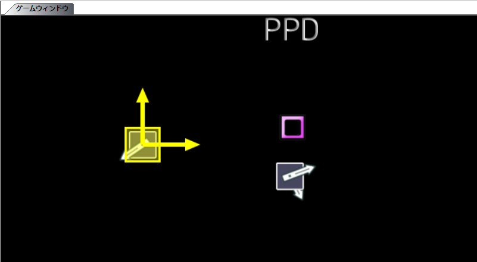
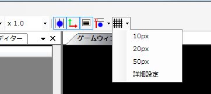
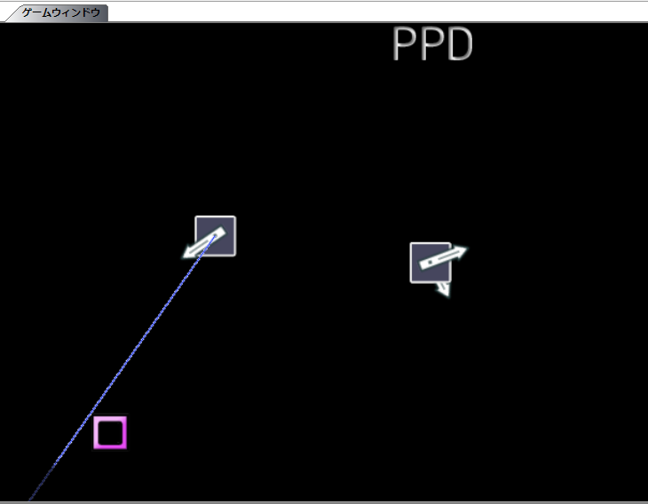

前回まででマークの打ち込みのみが終わりました。次は、マークの位置、角度、種類の設定を行っていきます。
まずは、マークの配置方法について説明します。
直感的に配置する場合は、マークを選択後にゲームウィンドウ内でドラッグして配置します。

マークの配置できる場所を固定したい場合はグリッドを使用できます。
グリッドが表示されている間は、グリッドの交差点上しかマウスで配置できなくなります。(グリッドのボタンで切り替え)

マークの位置を微調整する場合は、方向キー（矢印キー）で行います。(通常1px,+Shiftキーで10px,+Controlキーで5px。設定で変更可能)
また、同じ種類の前のマークの位置をコピーする場合は、Ctrl+Qを押します。
さらに、位置角度ローダーセーバーや幾何クリエーターを使うことで配置作業を簡略化することもできますが、今回は初心者向けということで割愛します。
次は、マークの角度について説明します。
マークを選択後、ゲームウィンドウ内でマーク上以外でドラッグすると角度を決めることができます。
このとき、Shiftキーを押すことでマークの角度をある角度の倍数に制限することができます。(デフォルトでは10度刻み。設定で変更可能)

また、同じ種類の前のマークの位置をコピーする場合は、Ctrl+Rを押します。
同様に、位置角度ローダーセーバーや幾何クリエーターを使うことで配置作業を簡略化することもできますが、今回は初心者向けということで割愛します。
次はマークの種類について説明します。
マークを打ち込む垂直位置によって、種類が変わることは説明しました。
打ち込んだマークの種類を変えるには、Shiftを押しながらマークをドラッグして変えたいマークの種類に対応する垂直位置でドロップします。
Ctrlを押しながらドラッグアンドドロップするとマークがコピーされます。
あるいは、範囲選択でCtrl+Cでコピーした後にマークを打ち込むと打ち込んだ位置にコピーされます。(Ctrl+Shift+Cでコピーバッファを空にするのを忘れないでください)
長押し（あるいはHOLD）の作成方法を説明します。
長押し開始点（HOLD開始点)にマークを打ち込みます。
さらに、長押し終了時点(HOLDの場合は次の同じ種類のマーク以前に）を打ち込み、二つを範囲選択で選びます。
このときに、Ctrl+Fを押すと長押し（HOLD)に変わります。
長押しを選択している状態で、Ctrl+Shift+Fを押すとスプリットされます

これでマークの設定は終わりです。
次へ